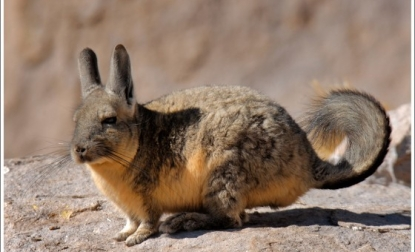
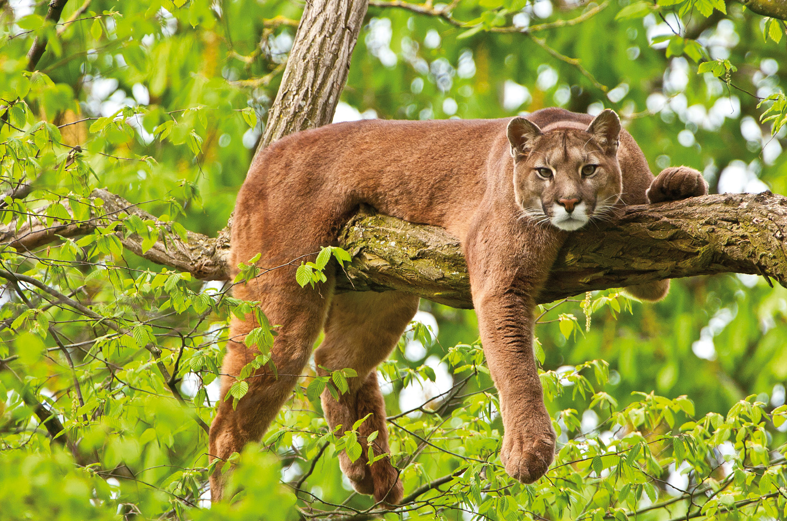
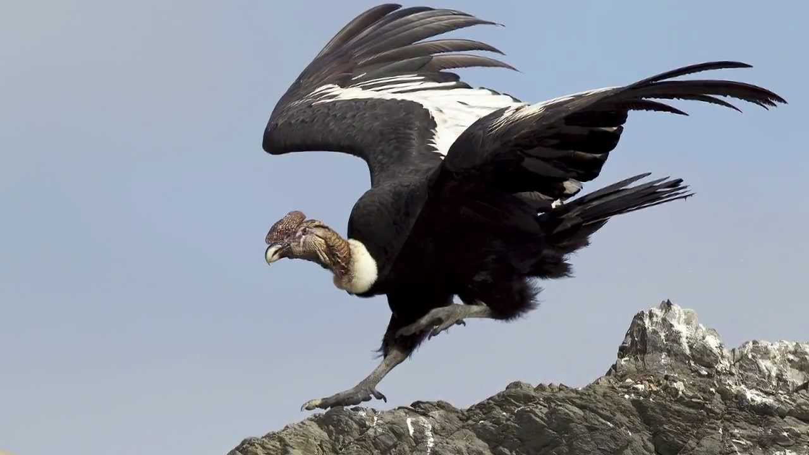
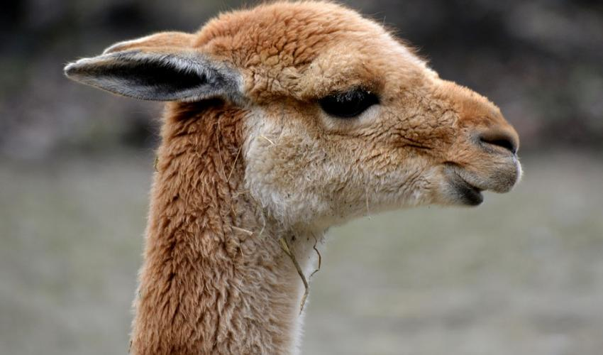
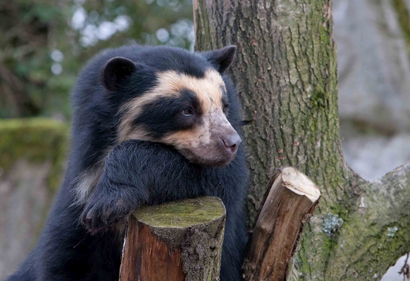

La distribución de la llama está limitada a las altiplanicies andinas. Sin duda, esta característica ha estado determinada por la actividada humana. El 70% de las llamas vive en Bolivia, pero es posible encontrarlas desde las regiones altas deEcuador hasta el noroeste de Argentina, con una mayor concentración en un radio de norte a sur de 350 km alrededor del lago Titicaca, en la frontera entre Bolivia y Perú. Acostumbradas a medios de altitud fríos y secos, las llamas se adaptan mal a los lugares situados fuera de su país de origen. Los numerosos intentos de introducirlas en distintos países han fracasado debido a las condiciones de humedad de los países templados y a las enfermedades; sin embargo, hoy en día es bastante habitual verlas en los zoológicos. En Estados Unidos, la población de llamas aumenta y sus propietarios las crían para aprovechar la lana, pero también como animal de compañía. La llama es de comportamiento dócil; pero es necesario conocer sus sistemas de defensa. Uno de los más espectaculares consiste en lanzar un esputo nauseabundo y ácido compuesto por sustancias digeridas parcialmente por el estómago. El agresor así bañado puede aún considerar que ha tenido suerte si no le ha entrado nada en los ojos.
Llama. Camélido de nombre científico Lama glama, de gran tamaño que puede alcanzar una altura en la cruz de 119 cm y un peso de hasta 155 kg. Posee callosidades en el pecho y su color, muy variado, a menudo es muy claro y totalmente blanco pero nunca llega a ser oscuro.
Los europeos del siglo XVI la encontraron, ya domesticada, como medio de transporte de los nativos para llevar los lingotes de plata de Potosí, donde se usaban hasta 300.000 animales. La utilización de las llamas como bestia de carga también hicieron posibles las transacciones comerciales, la expansión militar, la construcción de templos y la explotación de minas de oro y de plata. La llama era también el símbolo del poder soberano. El Inca recibía como regalo la napa, una llama blanca recubierta de una prenda escarlata, y adornada con zarcillos de oro y un collar de conchas rojas. Con motivo de las cuatro grandes fiestas incaicas, que se celebraban en los solsticios y los equinoccios, miles de llamas blancas eran sacrificadas al dios Sol. Una característica significativa de la importancia de la llama para esta civilización consiste en que los límites del imperio coincidían con los límites de la extensión de las llamas. Progresivamente, el desarrollo de las infraestructuras viarias y ferroviarias destituyó a la llama de sus funciones. Aún así, las dos especies domésticas (la alpaca y la llama) siguen desempeñando un papel importante en la economía de subsistencia de los pueblos remotos de los Andes. En estas zonas, se crían por la lana, la carne y la piel. Se han descrito dos razas de llama: la chaku, la más corriente, con la lana bastante larga y la ccara, de pelaje muy corto. Los cruces entre llama y vicuña efectuados en el sur de Perú han producido híbridos con el tamaño de la llama o de la alpaca y el color rojizo de la vicuña. También se puede cruzar con el guanaco y producir híbridos fértiles llamados guacollamas.
Enlaces a otras páginas
    